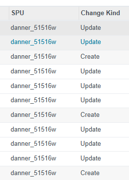
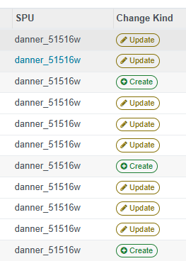

Flexible UI Configuration
One widget, dozens of styles. Mix and match base classes and semantic colors to fit your brand.

Dynamic Icons & Semantic Colors for Any Field — Pure Frontend Configuration
Tired of boring text columns in your List Views? The Web Widget Pill Icon allows you to beautify your Odoo interface instantly. Whether it's a Selection, Char, Integer, or Many2one field, you can now map values to FontAwesome icons and Soft UI color pills directly in the XML view.
Stop reading plain text. Start recognizing data instantly.


One widget, dozens of styles. Mix and match base classes and semantic colors to fit your brand.
Supports Char, Selection, Integer, and M2O fields seamlessly.
Keeps consistent visual style even when the record is being edited.
Configure your entire UI logic inside the XML options attribute.
<field name="kind"
widget="pill_icon"
options="{
'base': 'pill outline sm',
'values': {
'create': 'fa-plus-circle success',
'update': 'fa-pencil warning',
'delete': 'fa-trash danger'
}
}"/>
Built for speed, clarity, and ease of use in professional Odoo environments.
Maintained by Chris